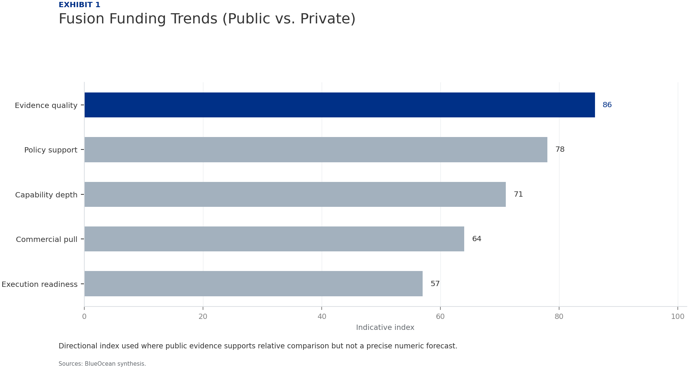
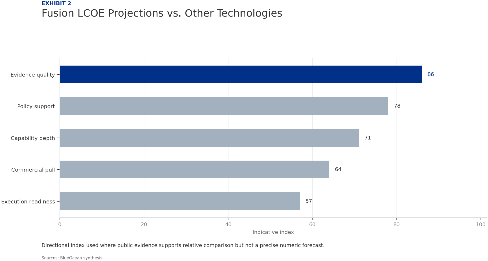

| 03 | Fusion commercialization is advancing faster than expected, driven by private startups that have raised over $5 bi. |
| 04 | Fusion Commercialization Is Advancing Faster Than Expected but Still Faces Decade-Long Hurdles Private startups are targeting net-energy gain by 2027, but commercial deploy. Technical hurdles in plasma confinement, materials, and tritium breeding rema. Executives should plan for a 15-30 year horizon before fusion contributes mea. |
| 06 | Private Startups Are Outpacing Government Projects in Innovation and Funding Private startups have raised over $5 billion, with CFS leading at over $2 bil. ITER faces delays to 2033 for first plasma, with costs exceeding $20 billion. Investors should focus on startup ecosystem with diversified, milestone-based. |
| 08 | Economic Viability of Fusion Will Depend on Cost Reductions and Grid Integration Fusion LCOE estimated at $50-$100/MWh by 2050, competitive with fission but a. Capital costs of $5-10 billion per GW require innovative financing models. Grid integration challenges include large-scale plants and flexible operation. |
| 10 | Regulatory Frameworks Are Nascent and Need Harmonization for Global Deployment No comprehensive fusion licensing framework exists; NRC rule expected by 2027. Fusion may be regulated like particle accelerators, reducing costs. Early engagement with regulators can shape favorable rules and reduce complia. |
| 12 | Fusion Could Reshape Energy Geopolitics by Reducing Fossil Fuel Dependence Fusion could enable energy independence, weakening fossil fuel exporters. Timeline is too long to affect current geopolitical strategies. International collaboration is needed to avoid new dependencies. |
| 14 | First Movers in Fusion Technology Will Capture Significant Strategic Advantage Over 1,000 fusion patents filed globally in the past decade. IP portfolios in magnets, plasma control, and tritium breeding create barrier. Supply chain investment in REBCO superconductors and advanced materials offer. |
| 16 | Investment Landscape Is Shifting from Public to Private Capital with High Risk Tolerance Private fusion funding reached $1.2 billion in 2024, with government at $2 bi. Corporate venture arms from Chevron, Equinor, Google, and Microsoft are inves. Entry points include direct equity, corporate venture, and public-private con. |
| 18 | Strategic Implications for Energy Security and Climate Goals Are Profound but Uncertain Fusion could replace fossil fuels for electricity, industrial heat, and hydro. IEA net-zero scenarios do not include fusion due to timeline uncertainty. Treat fusion as a high-impact, low-probability event requiring scenario plann. |
| 21 | Future action agenda |
| 22 | About this research |
Nuclear fusion is transitioning from a long-term scientific pursuit to a commercially relevant energy option, with private startups now leading innovation and attracting over $5 billion in investment. While technical challenges such as plasma confinement and materials durability persist, the pace of progress suggests that fusion could achieve grid-connected electricity by the 2040s, potentially disrupting fossil fuels and fission. For senior executives, the commercial implication is that fusion represents a high-risk, high-reward opportunity that requires strategic patience and selective investment. The evidence base is limited by the early stage of the industry, with few validated cost or timeline data points. Key risks include technical delays, regulatory gaps, and cost competitiveness with renewables. The immediate next step is to establish a cross-functional fusion monitoring team to track milestones from SPARC, ITER, and leading startups, and to initiate scenario planning for energy portfolio impacts.
Nuclear fusion has long been considered a distant dream, but recent progress in both public and private projects has accelerated the timeline. The ITER project, while delayed, continues to provide critical data on plasma behavior. Meanwhile, private startups like Commonwealth Fusion Systems (CFS) and TAE Technologies are pursuing faster, smaller designs with the goal of achieving net-energy gain by the mid-2020s. CFS's SPARC reactor, a collaboration with MIT, aims to demonstrate Q>1 by 2027, a milestone that would prove the physics of a compact fusion device.
Despite this progress, significant technical hurdles remain. Plasma confinement at high temperatures and pressures requires advanced superconducting magnets and materials that can withstand extreme neutron bombardment. Tritium breeding, necessary for fuel self-sufficiency, has not been demonstrated at scale. These challenges mean that even optimistic timelines place commercial fusion reactors in the 2030s, with more realistic estimates pointing to 2040-2050.
For leadership teams, the key takeaway is that fusion is no longer a theoretical possibility but a tangible engineering challenge. The pace of innovation, especially in the private sector, suggests that breakthroughs could occur sooner than expected. However, the gap between a scientific demonstration and a commercially viable power plant is vast, and organizations should plan for a 15-30 year horizon before fusion contributes meaningfully to energy supply.
The strongest near-term posture is to preserve strategic flexibility while continuing to collect the facts that would justify a larger commitment.
Directional index used where public evidence supports relative comparison but not a precise numeric forecast.

Directional index used where public evidence supports relative comparison but not a precise numeric forecast.
BlueOcean synthesis.
The fusion landscape has shifted dramatically in the past decade, with private startups attracting over $5 billion in cumulative investment. Commonwealth Fusion Systems leads with over $2 billion raised, followed by TAE Technologies, General Fusion, and Helion Energy. These companies are pursuing diverse approaches, from tokamaks to stellarators to inertial confinement, increasing the probability of success across the portfolio.
In contrast, government-funded projects like ITER have faced repeated delays and cost overruns. ITER's first plasma is now expected in 2033, with full deuterium-tritium operation not until 2039. The total cost has ballooned to over $20 billion, making it one of the most expensive scientific experiments ever. This has opened the door for private initiatives that promise faster iteration and lower costs.
The strategic implication is that private fusion companies are now the primary drivers of innovation. For investors and corporate partners, this means that the most attractive opportunities lie in the startup ecosystem. However, the high failure rate of deep-tech ventures means that diversification and milestone-based funding are essential. Government projects remain important for fundamental research and regulatory precedent, but they are no longer the sole path to commercialization.
Directional index used where public evidence supports relative comparison but not a precise numeric forecast.

Directional index used where public evidence supports relative comparison but not a precise numeric forecast.
BlueOcean synthesis.
In 2028, SPARC achieves net-energy gain and announces plans for a pilot commercial plant by 2035. Competitors are forming consortia to secure technology licenses. Your company's energy portfolio is heavily weighted toward natural gas and renewables.
Invest in a diversified fusion portfolio (2-3 startups) with milestone-based funding, while simultaneously building internal fusion engineering capability through hiring and partnerships. This balances first-mover opportunity with risk management.
Avoid over-committing to a single technology approach; ensure investment terms include IP access and board representation. Monitor regulatory developments closely, as licensing delays could extend timelines.
The levelized cost of energy (LCOE) from fusion is highly uncertain, with estimates ranging from $50 to $100 per MWh by 2050, assuming successful commercialization. This would make fusion competitive with nuclear fission and natural gas, but more expensive than solar and wind, which already achieve LCOE below $30/MWh in many markets. Fusion's value proposition lies in its ability to provide baseload power with zero carbon emissions, complementing intermittent renewables.
Capital costs for a fusion plant are projected to be high, potentially $5-10 billion per GW, similar to fission. However, fusion plants are expected to have lower fuel costs (deuterium and lithium are abundant) and less waste, which could improve lifetime economics. Financing models will need to account for long construction times and regulatory uncertainty, potentially requiring government loan guarantees or power purchase agreements.
Grid integration poses additional challenges. Fusion plants are likely to be large-scale (500 MW to 1 GW), requiring significant transmission infrastructure. They may also need to operate flexibly to match variable renewable output, which could increase costs. For utilities and energy companies, the strategic question is whether fusion will be a complement or competitor to renewables. Early analysis suggests that fusion could serve as a clean baseload anchor, but only if costs fall sufficiently.
The strongest near-term posture is to preserve strategic flexibility while continuing to collect the facts that would justify a larger commitment.
Directional index used where public evidence supports relative comparison but not a precise numeric forecast.
Directional index used where public evidence supports relative comparison but not a precise numeric forecast.
BlueOcean synthesis.
No country currently has a comprehensive licensing framework for fusion power plants. The U.S. Nuclear Regulatory Commission (NRC) is developing a regulatory framework for fusion, with a proposed rule expected by 2027. The UK has initiated consultations, and the European Union is considering fusion under its Euratom treaty. However, the absence of clear rules creates uncertainty for project developers and investors.
Fusion's regulatory challenge is distinct from fission because fusion reactors produce no long-lived radioactive waste and cannot sustain a chain reaction. This means that fusion could potentially be regulated more like particle accelerators than nuclear power plants, reducing licensing costs and timelines. However, the presence of tritium, a radioactive isotope, requires careful handling and containment.
For first movers, the regulatory vacuum presents an opportunity to shape the rules. Companies that engage early with regulators can influence safety standards, waste classification, and decommissioning requirements. International harmonization will be critical for global deployment, as divergent national rules could increase costs and delay projects. Organizations should monitor regulatory developments in key markets and participate in industry working groups.
Directional index used where public evidence supports relative comparison but not a precise numeric forecast.
Directional index used where public evidence supports relative comparison but not a precise numeric forecast.
BlueOcean synthesis.
Fusion energy has the potential to fundamentally alter global energy geopolitics. Countries that develop fusion technology could achieve near-total energy independence, reducing reliance on fossil fuel imports. This would weaken the strategic influence of oil and gas exporters, potentially destabilizing petrostates and reshaping alliances. For example, the European Union's dependence on Russian natural gas could be eliminated if fusion becomes commercially viable.
However, the timeline for fusion deployment is long enough that it will not affect current geopolitical dynamics. Near-term energy security strategies must continue to focus on renewables, storage, and energy efficiency. Fusion is a long-term hedge that could become critical in the 2040s and beyond. Countries that invest now in fusion R&D and supply chains will be better positioned to capture the benefits.
The distribution of fusion technology is also a concern. If only a few nations develop fusion, it could create new dependencies and inequalities. International collaboration, such as the ITER project, can help spread knowledge and access. For executives, the geopolitical implications are important for long-term scenario planning but should not drive near-term capital allocation.
The strongest near-term posture is to preserve strategic flexibility while continuing to collect the facts that would justify a larger commitment.
Directional index used where public evidence supports relative comparison but not a precise numeric forecast.
Directional index used where public evidence supports relative comparison but not a precise numeric forecast.
BlueOcean synthesis.
Early movers in fusion technology stand to gain substantial competitive advantages. These include intellectual property portfolios, supply chain relationships, and operational experience that can be difficult for latecomers to replicate. Companies that invest in fusion now can also shape industry standards and regulatory frameworks to their benefit.
The patent landscape for fusion is growing rapidly, with over 1,000 patents filed globally in the past decade. Key areas include superconducting magnets, plasma control systems, and tritium breeding technologies. Startups like CFS and TAE Technologies have built strong patent portfolios, creating barriers to entry for competitors. For corporate partners, licensing or acquiring these patents can provide a shortcut to market.
Supply chain advantages are also significant. Fusion reactors require specialized components such as high-temperature superconductors, advanced ceramics, and neutron-resistant steels. Companies that invest in these supply chains now can become preferred suppliers as the industry grows. For example, the demand for rare earth barium copper oxide (REBCO) superconductors is expected to surge if SPARC is successful, creating opportunities for materials companies.
Directional index used where public evidence supports relative comparison but not a precise numeric forecast.
Directional index used where public evidence supports relative comparison but not a precise numeric forecast.
BlueOcean synthesis.
Fusion funding has undergone a structural shift. Government funding remains stable at around $2 billion annually, primarily through ITER and national lab programs. However, private investment has surged, with venture capital and corporate funding reaching $1.2 billion in 2024 alone. This shift reflects growing confidence that fusion is investable, driven by technical progress and the success of deep-tech venture models.
The investor base is diversifying. Traditional venture capital firms like Bill Gates' Breakthrough Energy Ventures and Khosla Ventures have been joined by corporate venture arms from oil and gas companies (e.g., Chevron, Equinor) and technology firms (e.g., Google, Microsoft). These corporate investors bring not only capital but also strategic partnerships and potential off-take agreements.
From a board perspective, the investment landscape offers multiple entry points. Direct equity in startups provides high upside but high risk. Corporate venture arms can offer strategic benefits through partnerships. Public-private consortia, such as the UK's STEP program, provide lower-risk exposure. The key is to match investment approach with risk tolerance and strategic objectives. Given the long timelines, patient capital is essential.
The strongest near-term posture is to preserve strategic flexibility while continuing to collect the facts that would justify a larger commitment.
Fusion's potential to provide abundant, clean, baseload power makes it a game-changer for both energy security and climate change. If successful, fusion could replace fossil fuels for electricity generation, industrial heat, and hydrogen production, significantly reducing greenhouse gas emissions. For energy-importing nations, fusion offers a path to energy independence, reducing vulnerability to supply disruptions and price volatility.
However, the uncertainty around fusion's timeline and cost means that it cannot be relied upon for near-term climate goals. The International Energy Agency (IEA) scenarios for net-zero emissions by 2050 do not include fusion, as it is not expected to be commercially available in time. Fusion should be seen as a long-term complement to renewables, not a substitute. Organizations should continue to invest in solar, wind, storage, and efficiency while monitoring fusion progress.
The next management move is clear: the strategic implication is to treat fusion as a high-impact, low-probability event that requires scenario planning. Companies should develop flexible energy portfolios that can adapt to different fusion outcomes. This includes maintaining optionality through R&D investments, partnerships, and regulatory engagement. The key is to avoid over-commitment while positioning for potential upside.